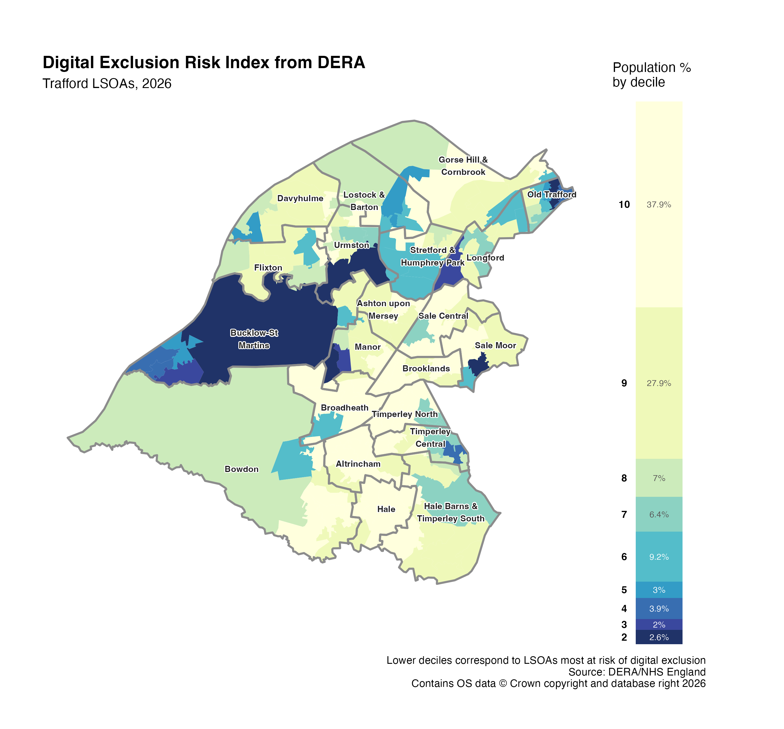

National Digital Exclusion Risk Index
Digital exclusion is recognised as a key driver of health inequalities. The NHS England Healthcare Inequalities Improvement Programme comisioned the development of the National Digital Exclusion Risk Index which can be explored through the Digital Exclusion Risk Atlas (DERA)
The index scores four domains: Digital access and capability, Affordability and economic pressure, Ability and skills, and Agency, motivation and trust. It uses 12 indicators, with three indicators per domain. Some of the indicators included are: broadband availability, mobile connectivity, income deprivation, housing insecurity, lower educational attainment, disability, english proficiency, older age structures and social isolation.
The map and bar below illustrate Trafford's LSOAs decile ranking when compared to all LSOA in England. Each decile contain 10% of England's LSOAs with lower deciles indicating a higher risk of digital exclusion. While the overall outlook of Trafford is positive, there ate pockets of population at risk of digital exclusion.
Although Trafford doesn’t have any LSOAs in decile 1, it does have four LSOAs in decile 2. This means that 2.6% (or 6,251 people) of Trafford’s population resides in a LSOA that falls within the 20% most at risk of digital exclusion in England, according to this index. These LSOAs are located within the wards of Bucklow-St Martins, Urmston, Manor, Old Trafford, and Sale Moor.
Furthermore, 8.5% (or 20,425 people) of Trafford’s population lives in a LSOA that is within the 40% most at risk of digital exclusion. This includes the LSOAs mentioned above, as well as additional LSOAs within the same wards, along with Longford and Timperley Central wards.
